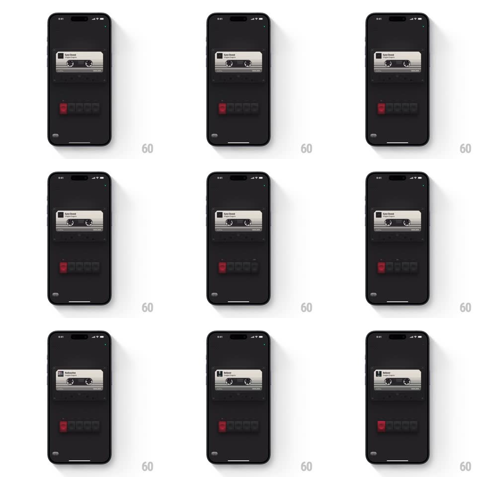

Media
Frame-by-frame

Rebuild this interaction 1:1: Solos' tactile player - a skeuomorphic dark deck: a cassette tape with spinning reels sits in its slot, and the row of chunky physical buttons below depresses with real 3D depth when tapped; switching tracks swaps the cassette's label.

Rebuild this interaction 1:1: Solos' tactile player - a skeuomorphic dark deck: a cassette tape with spinning reels sits in its slot, and the row of chunky physical buttons below depresses with real 3D depth when tapped; switching tracks swaps the cassette's label. ## Integration Integration: stack-agnostic spec - springs given as stiffness/damping, timed motions as duration + curve; map every value to your framework and animation library of choice. ## Scene A matte black deck: a cassette graphic in the upper slot (label showing the track - "Eyes Closed", then "Radioactive", then "Believer"), both reels visible through the window; below it a hardware button row - one red play key plus dark square keys - each with top-face highlights and side shadow. Tiny screws sit in the panel corners. ## Motion spec Pattern: physical button presses + tape mechanics. - Press a button: the keycap travels down (translateY +3px, 60ms, ease-in), its side shadow shortens, and its top highlight dims - a real depression; release springs it back (spring ~600/25, 120ms) with a faint click bounce. - Play: the red key stays half-depressed (latched state) and the cassette reels start spinning - right reel winds faster than the left (tape transfers), both with a subtle spin-up ramp (400ms to full speed, not instant). - Track change: the cassette slides/tilts forward and flips (rotateX 90deg, 300ms) as the label swaps mid-flip, then settles back - the new track's label reads on the settled cassette. - Pause: reels decelerate to a stop over 500ms; the red key unlatches with a pop-up spring. ## Calibration - Reel speed difference sells the tape metaphor - the supply reel empties as the take-up fills. - Button travel is 3px max - any more reads mushy, any less reads flat. ## Reduced motion Buttons toggle state with opacity change; reels rotate slowly without ramp. ## Don't miss - The tape window shows the tape pack thickness on each reel changing over time. - Idle state has the faintest reel wobble (1rpm drift) - the deck is never dead.